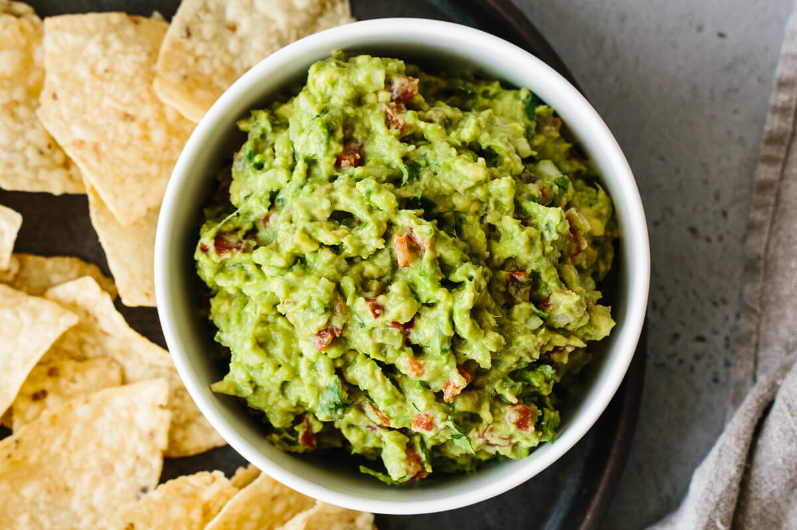

A cookbook or cookery book is a kitchen reference containing recipes.
Cookbooks may be general, or may specialize in a particular cuisine or category of food.
Recipes in cookboks are organized in various ways: by course (appetizer, first course, main course, dessert), by main ingredient, by cooking technique, alphabetically, by region or country, and so on. They may include illustrations of finished dishes and preparation steps; discussions of cooking techniques, advice on kitchen equipment, ingredients and substitutions; historical and cultural notes; and so on.
List of recipes:
Quick and easy sugar cookies! They are really good, plain or with candies in them. My friend uses chocolate mints on top, and they're great!

Ingredients:
You can make this avocado salad smooth or chunky, depending on your tastes.
Ingredients: